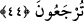
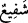
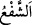

şeye güç yetiremezler ve akıl erdiremezlerse de mi (şefaatçi edineceksiniz)?
Âyet, putların Allah katında kendilerine şefâatçilik edeceğine inanan Mekkeliler
hakkında inmiştir. Allah onları reddederek şöyle buyurmaktadır:
“Yoksa onlar” Kureyş “Allah’tan başkasını” Allah Teâlâ’nın izni bulunmadığı halde
kendilerine O’nun katında şefâat edecek “şefaatçiler mi edindiler?” Yâni bilakis
edindiler.
“ kelimesi “in çoğulu olup âyette putlar kasdedilmektedir. “ birşeyi
kendi misline katmak demektir. Şefâat ise birisine yardımcı olarak, onun adına birşey
isteyerek katılmak demektir. Genellikle rütbece daha yüksek birinin altındaki birine
katılması anlamında kullanılır. Kıyametteki şefâat de bundandır.
“De ki: Onlar hiçbir şeye güç yetiremezler ve akıl erdiremezlerse de mi (şefaatçi
edineceksiniz)?”
Buradaki hemze olanı reddetmek, çirkin bulmak ve kınamak içindir. Mânâ ise
şöyledir: Ey Muhammed, müşriklere de ki: Yâni putlar hiçbir şeye sâhip olmayan, Allah
katında şefâatçilik etme gücüne sâhip olma ve sizin kendilerine tapındığınızı akletmek
bir tarafa küçücük bir şeyi bile akledemeyen varlıklar olsalar bile yine de onları
şefâatçi mi edineceksiniz?! Yâni cemâdâttan şefâat beklerler. Halbuki onlar ilimden ve
kudretten nasipsizdirler.
et-Te’vîlâtü’n-Necmiyye’de der ki: “Allah Teâlâ işâret etmektedir ki birtakım
nesneleri, Allah’ın emriyle ve şerîate uygun olarak değil de hevâ ve tabîat ile ibâdet ya
da şefâat vesilesi edinmek dalâlet üstüne dalâlettir. İbadet ve şefâatin makbul olanı,
Allah’ın emri ile ve şerîata uygun olarak O’nun Peygamberi’ne uyarak yapılandır.
Bunun sebebi şudur: Kulun perdesi hevâ ve tabîatıdır. Peygamberler ise kulların hareket
ve duruşlarının hevâlarının emriyle ve nefslerine tâbi olarak değil, Allah’ın emri ile ve
peygamberlere tâbi olmak sûretiyle olması için gönderilmişlerdir. Çünkü nefis ve onun
hevâsı/arzuları, zulmânîdir. Allah’ın emri ve peygamberlere tâbi olmak ise nûrânîdir.
Şehvetler de zulmânîdir. Kul Allah’a hevâ ve tabîat ile ibâdet edecek olursa, ibâdeti
zulmânîleşir. Ama hanımı ile şerîate ve emrolunana uygun olarak beraber olursa, şehveti
nûrânîleşir.
44. De ki: Bütün şefâat Allah’ındır. Göklerin ve yerin hükümranlığı O’nundur.
Sonra O’na döndürüleceksiniz.
Hakkı perçinlemek üzere zikredilenlerle onları susturduktan ve bilgisizliklerini ortaya
koyduktan sonra “De ki: Bütün şefâat Allah’ındır.” Yâni şefâat yetkisinin sâhibi Allah